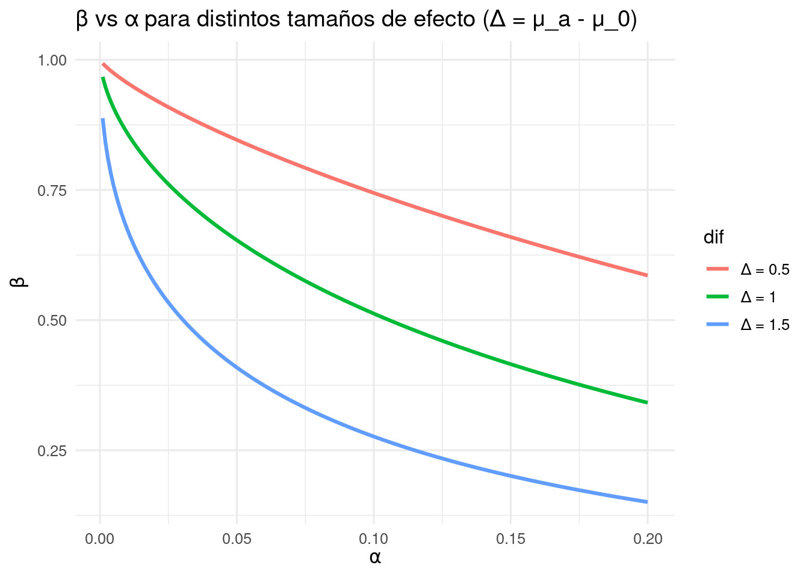

Una hipótesis estadística es una conjetura o una afirmación sobre la distribución de una o más variables aleatorias. Un contraste de hipótesis (o un test de hipótesis o una prueba de hipótesis) es un procedimiento para decidir si se acepta o se rechaza una hipótesis.
4.1 Definiciones básicas. Contraste de hipótesis simples
Usualmente se dispone de una muestra \(X_1 ,\ldots, X_n\) de una variable aleatoria \(X\) con distribución \(F\) y función de densidad (o función de masa) \(f\) . Sobre la distribución de \(X\) se realizan dos afirmaciones entre las que se debe decidir.
En general esas dos afirmaciones serán excluyentes.
una se llama hipótesis nula y la otra hipótesis alternativa. Se denotan por \(H_0\) y \(H_1\), respectivamente. Se dice que en un test de hipótesis se contrasta \(H_0\) frente a \(H_1\) .
La hipótesis nula es más conservadora en el sentido de que no será rechazada a menos que la evidencia muestral en su contra sea muy clara.
Esta hipótesis suele establecer un modelo sencillo para la distribución de \(X\) (por ejemplo, si \(F\) pertenece a una familia paramétrica, \(H_0\) fija el valor del parámetro) o bien propone como distribución de \(X\) aquella que es comúnmente aceptada como una buena descripción del fenómeno que modeliza \(X\).
La hipótesis alternativa especifica el tipo de alejamiento de la hipótesis nula que podría presentar la distribución de \(X\).
Si un investigador considera que un fenómeno aleatorio no ha estado adecuadamente modelizado hasta ese momento y cree tener una explicación más satisfactoria, propondrá ésta como hipótesis alternativa y el modelo vigente como hipótesis nula.
Sólo si hay evidencia muestral suficiente para rechazar la hipótesis nula, será aceptada la hipótesis alternativa.
Podemos distinguir tres tipos de pruebas de hipótesis:
A. Suponemos que \(F\) (y \(f\) ) pertenecen a una cierta familia paramétrica indexada por un parámetro \(\theta \in\Theta\) y planteamos el contraste
B. Contrastes de bondad de ajuste (goodness-of-fit tests, en inglés): \[\left\{ \begin{array}{lcc}
H_0 & : & f=f_0 \\
\\ H_1 & : & f\neq f_0
\end{array}
\right.\]
C. Para dos distribuciones \(f_0\) y \(f_1\) que no necesariamente pertenecen a la misma familia paramétrica, se plantea el contraste \[\left\{ \begin{array}{lcc}
H_0 & : & f=f_0 \\
\\ H_1 & : & f= f_1
\end{array}
\right.\]
Una hipótesis simple es aquella que especifica completamente la distribución de \(X\). En otro caso, se dice que la afirmación es una hipótesis compuesta. Por ejemplo, si \(f \in \{f_\theta : \theta \in \Theta \mathbb{R}\}\), la hipótesis \(H : \theta = \theta_0\) es una hipótesis simple. La hipótesis \(H : \theta > \theta_0\) es compuesta.
Supongamos que se contrasta \(H_0\) frente a \(H_1\) . Cuando se observa la muestra \(\underset{\sim}{x} = (x_1 ,\ldots, x_n )\) se debe decidir si ésta presenta o no evidencia suficiente para rechazar \(H_0\) . El subconjunto \(C\) del espacio muestral \(\mathcal{X}^n\) de muestras para las cuáles se decide rechazar la hipótesis nula en favor de la alternativa se llama región crítica o región de rechazo del contraste. El complementario de \(C\) se llama región de aceptación. Un contraste queda definido por su región crítica \(C\).
4.1.1 Tipos de errores
El error de tipo I se considera más grave que el error de tipo II, dado que la hipótesis nula es siempre la más conservadora.
DECISIÓN: Aceptar H₀
DECISIÓN: Rechazar H₀
REALIDAD: H₀ cierta
Decisión correcta
Error de TIPO I
REALIDAD: H₀ falsa
Error de TIPO II
Decisión correcta
\[\begin{eqnarray*}
\alpha&=&P(\mbox{error tipo I})\\
&=&P(\mbox{Rechazar $H_0$ cuando $H_0$ es verdadera})\\
&=&P(\underset{\sim}{x}\in C\mid H_0\mbox{ cierta})
\end{eqnarray*}\]
\[\begin{eqnarray*}
\beta&=&P(\mbox{error tipo II})\\
&=&P(\mbox{No rechazar $H_0$ cuando $H_0$ es falsa})\\
&=&P(\underset{\sim}{x}\notin C\mid H_0\mbox{ falsa})
\end{eqnarray*}\]
Gráfico de hipótesis
Obsérvese que si se desea reducir la probabilidad del error de tipo I, \(\alpha = P_F(\underset{\sim}{x}\in C\mid H_0\mbox{ cierta})\), se habrán de reducir los puntos de la región crítica \(C\), pero ello implica que el conjunto \(\bar{C}\), complementario de \(C\), aumenta y así la probabilidad de error de tipo II, \(\beta=P_F(\underset{\sim}{x}\notin C\mid H_0\mbox{ falsa})\), también crecerá en general.
Dado que el error de tipo I se ha considerado más grave que el error de tipo II, la práctica habitual en el contraste de hipótesis es considerar únicamente pruebas que garantizan que la probabilidad de cometer un error de tipo I será inferior a un valor dado \(\alpha\) suficientemente pequeño (por ejemplo, \(\alpha = 0.01\); \(0.05\); \(0.1\)) y
buscar entre todas ellas aquélla que hace mínima la probabilidad de cometer un error de tipo II.
Al valor \(\alpha\) se le llama nivel de significación del test.
4.1.2 Algo de interpretación con R
Sensibilidad de \(\beta\) respecto a α en una prueba de hipótesis
Cuando se hace una prueba unilateral para la media de una Normal con varianza conocida:
Hipótesis nula
\[
H_0: \mu = \mu_0
\]
Hipótesis alternativa
\[
H_1: \mu > \mu_0
\]
Punto crítico
Como estamos en una prueba unilateral para la media de una Normal con varianza conocida:
Muestra de tamaño \(n\): \(\bar{X} \sim N\!\left(\mu, \tfrac{\sigma^2}{n}\right)\).
Bajo \(H_0: \mu = \mu_0\), rechazamos si
\[
\bar{X} > k, \quad \text{donde } k = \mu_0 + z_{1-\alpha}\,\frac{\sigma}{\sqrt{n}}.
\] El error de tipo II ocurre cuando no rechazamos \(H_0\) a pesar de que \(\mu = \mu_a > \mu_0\).
Interpretación didáctica:
Al disminuir \(\alpha\) (ser más estricto para rechazar \(H_0\)), aumenta \(\beta\) (es más difícil detectar \(H_1\)).
# Parámetros del problemamu0<-15mua<-16# media bajo H1sigma<-4# desviación conocidan<-25# tamaño de muestra# Función beta(α) para prueba unilateral Zbeta_z<-function(alpha, mu0, mua, sigma, n){delta<-(mua-mu0)/(sigma/sqrt(n))pnorm(qnorm(1-alpha)-delta)}# Curva beta(α) en una malla de αalphas<-seq(0.001, 0.20, by =0.001)betas<-sapply(alphas, beta_z, mu0=mu0, mua=mua, sigma=sigma, n=n)# Tabla para valores típicos de αalpha_star<-c(0.10, 0.05, 0.01)beta_star<-sapply(alpha_star, beta_z, mu0=mu0, mua=mua, sigma=sigma, n=n)cbind(alpha=alpha_star, beta=round(beta_star, 4))
# Gráfica en base Rplot(alphas, betas, type="l", lwd=2, xlab=expression(alpha~"(nivel de significancia)"), ylab=expression(beta~"(error de tipo II)"), main=expression(paste("Sensibilidad de ", beta, " respecto a ", alpha)))grid()# Añadir referenciasabline(v =alpha_star, lty =3)points(alpha_star, beta_star, pch =19)text(alpha_star, beta_star, labels=paste0(" β=", round(beta_star,3)), pos=4)
Warning: Using `size` aesthetic for lines was deprecated in ggplot2 3.4.0.
ℹ Please use `linewidth` instead.

Cuando el efecto \((\Delta = \mu_a - \mu_0)\) es mayor, la curva se desplaza hacia abajo:
para el mismo \(\alpha\), \(\beta\) es menor \(\;\Rightarrow\;\) la potencia \((1-\beta)\) aumenta.
set.seed(123)B<-1e5alpha_vec<-c(0.10, 0.05, 0.01)sim_beta<-function(alpha, mu0, mua, sigma, n, B=1e5){k<-mu0+qnorm(1-alpha)*sigma/sqrt(n)xbar<-replicate(B, mean(rnorm(n, mean=mua, sd=sigma)))mean(xbar<=k)# proporción de NO-rechazos cuando H1 es verdadera = β}beta_sim<-sapply(alpha_vec, sim_beta, mu0=mu0, mua=mua, sigma=sigma, n=n, B=B)beta_the<-sapply(alpha_vec, beta_z, mu0=mu0, mua=mua, sigma=sigma, n=n)cbind(alpha=alpha_vec, beta_teorico=round(beta_the,4), beta_sim=round(beta_sim,4))
Un mayor tamaño del efecto \((\mu_a - \mu_0)\) o un mayor tamaño de muestra \(n\) reducen \(\beta\).
La práctica usual es fijar un \(\alpha\) pequeño (0.01, 0.05, 0.1) y luego buscar el diseño que minimice \(\beta\) o equivalga a maximizar la potencia del test.
Si el menor valor obtenido \(\beta\) para la probabilidad de error de tipo II es inaceptablemente grande, pueden tomarse dos medidas para reducirlo:
aumentar la probabilidad de error de tipo I \(\alpha\) permitida, o
aumentar el tamaño de la muestra.
Supongamos que la distribución de \(X\) pertenece a una familia paramétrica \(\{f_\theta:\theta \in\Theta\}\) y se contrasta
\[\left\{ \begin{array}{lcc}
H_0 & : & \theta \in\Theta_0 \\
\\ H_1 & : & \theta \in\Theta_1
\end{array}
\right.\] donde \(\Theta_0\cup\Theta_1=\Theta\), \(\Theta_0\cap\Theta_1=\emptyset\). ::: {#exm-4.1} Suponga que un candidato, Jones, dice que él ganará más de \(50\%\) de los votos en una elección urbana y por tanto saldrá como ganador. Como buscamos apoyo para la hipótesis alternativa de que lo dicho por Jones es falso, nuestra hipótesis alternativa es que \(p\), la probabilidad de seleccionar un votante que esté a favor de Jones, es menor que \(0.5\). Si podemos demostrar que los datos apoyan el rechazo de la hipótesis nula \(p = 0.5\) (el valor mínimo necesario para conseguir una mayoría) en favor de la hipótesis alternativa \(p < 0.5\), hemos alcanzado nuestro objetivo de investigación. Suponga que \(n = 15\) votantes se seleccionan aleatoriamente de una ciudad y se registra \(Y\), el número que está a favor de Jones. Calcule \(\alpha\) si seleccionamos \(C = \{y \leq 2\}\) como la región de rechazo.
Para la encuesta política de Jones se muestrearon \(n=15\) votantes. \[\begin{eqnarray*}
H_0&:&p=0.5\\
H_a&:&p<0.5
\end{eqnarray*}\] Estadístico de prueba es \(Y\).
\(Y:\#\) de votantes a favor. \(Y\sim Binom(15,\,p)\)
Región de rechazo RR: \[RR=\{Y\leq 2\}\]
C'alculo de \(\alpha\): \[\begin{eqnarray*}
\alpha&=&P(\mbox{error tipo I})\\
&=&P(\mbox{Rechazar $H_0$ cuando $H_0$ es verdadera})\\
&=&P(Y\leq 2\mbox{ cuando }p=0.5)
\end{eqnarray*}\]
\[\begin{eqnarray*}
\alpha&=&P(Y\leq 2\mbox{ cuando }p=0.5)\\
&=&pbinom(2,\,15,\,0.5)\\
&=&0.003692627
\end{eqnarray*}\]
Asumimos un riesgo muy pequeño (\(\alpha=0.004\)), de concluir que Jones perderá si en realidad es el ganador.
\[\begin{eqnarray*}
\beta(p_1=0.3)&=&P(\mbox{error tipo II})\\
&=&P(\mbox{No rechazar $H_0$ cuando $H_a$ es verdadera})\\
&=&P(Y> 2\mbox{ cuando }p=0.3)\\
&=&1-P(Y\leq 2\mbox{ cuando }p=0.3)\\
&=&1-pbinom(2,\,15,\,0.3)\\
&=&0.8731723
\end{eqnarray*}\] Esta prueba nos llevará a concluir que Jones es ganador, aún cuando \(p=0.3\). :::
Definition 4.1 Se define la función de potencia\(\eta(\theta)\) del contraste como \[\eta(\theta)=P_\theta(\underset{\sim}{x}\in C)=\left\{ \begin{array}{lcc}
\alpha & si & \theta \in\Theta_0 \\
\\ 1-\beta & si & \theta \in\Theta_1
\end{array}
\right.\]
Para \(0\leq\alpha\leq1\), un contraste de hipótesis con función de potencia \(\eta(\theta)\) tiene tamaño\(\alpha\) si \[\sup_{\theta\in\Theta_0}\eta(\theta)=\alpha\] Para \(0\leq\alpha\leq1\), un contraste de hipótesis con función de potencia \(\eta(\theta)\) tiene Nivel de significancia\(\alpha\) si \[\sup_{\theta\in\Theta_0}\eta(\theta)\leq\alpha\]
El conjunto de contrastes con nivel de significación \(\alpha\) contiene las pruebas de tamaño \(\alpha\).
Un contraste que minimiza \(\beta=P_\theta(\underset{\sim}{x}\in \bar{C}\mid H_1\mbox{ cierta})\) entre aquellos que tienen tamaño \(\alpha\) se dice que es el contraste más potente de tamaño \(\alpha\) o el mejor contraste de tamaño \(\alpha\).
Tip 4.2: Función de potencia y contrastes más potentes
4.2 1. Función de potencia
La función de potencia de una prueba mide, para cada valor posible del parámetro \(\theta\), la probabilidad de rechazar la hipótesis nula:
\[
\eta(\theta) = P_\theta(\tilde{x} \in C),
\]
donde: - \(\tilde{x}\) es la muestra, - \(C\) es la región crítica (el conjunto de valores de la muestra que llevan a rechazar \(H_0\)).
En palabras: La función de potencia nos dice qué tan probable es rechazar \(H_0\), dado que el parámetro vale \(\theta\).
4.3 2. Casos especiales de la función de potencia
Si \(\theta \in \Theta_0\) (es decir, si \(H_0\) es cierta):
\[
\eta(\theta) = \alpha
\]
Esto refleja que, bajo \(H_0\), la probabilidad de rechazar \(H_0\) es justamente la probabilidad de cometer un error de tipo I.
Si \(\theta \in \Theta_1\) (es decir, si \(H_1\) es cierta):
\[
\eta(\theta) = 1 - \beta
\]
Esto refleja que, bajo \(H_1\), la probabilidad de rechazar \(H_0\) es la potencia de la prueba.
4.4 3. Tamaño y nivel de significación
Tamaño \(\alpha\):
Una prueba tiene tamaño \(\alpha\) si el peor caso (la mayor probabilidad de rechazar \(H_0\) cuando es cierta) es exactamente \(\alpha\):
→ El nivel de significación es un límite superior que ponemos a la probabilidad de error tipo I.
Nota: Todo contraste de tamaño \(\alpha\) tiene también nivel de significación \(\alpha\), pero no todo contraste con nivel de significación \(\alpha\) necesariamente alcanza el tamaño exacto.
4.5 4. Contraste más potente
Entre todas las pruebas que tienen el mismo tamaño \(\alpha\), buscamos la que minimiza \(\beta\) (o equivalentemente, la que maximiza la potencia \(1-\beta\)).
Esa prueba se llama:
El contraste más potente de tamaño \(\alpha\),
o el mejor contraste de tamaño \(\alpha\).
Es decir, para un mismo control de error tipo I, elegimos la prueba que detecta con mayor eficacia cuando \(H_1\) es verdadera.
En resumen:
- La función de potencia es la herramienta que unifica \(\alpha\) y \(1-\beta\).
- Tamaño = probabilidad máxima de error tipo I.
- Nivel de significación = restricción para controlar ese error.
- El mejor contraste de tamaño \(\alpha\) es aquel que, manteniendo fijo el error tipo I, maximiza la probabilidad de rechazar \(H_0\) cuando realmente es falsa.
Establezca la función de potencia, gráfiquela e interprete comparativamente los resultados en las siguientes dos opciones:
Considere primero el contraste de rechazar \(H_0\) si y sólo si se observan todos los éxitos (es decir, \(X=5\)).
Opción (a):
Rechazar \(H_0\)solo si se observan los 5 éxitos
Modelo. Sea \(X \sim \mathrm{Bin}(5,\theta)\) con función de probabilidad \(P_\theta(X=x)=\binom{5}{x}\theta^x(1-\theta)^{5-x}\), \(x=0,1,\dots,5\).
Región crítica La regla propuesta es rechazar\(H_0\) únicamente cuando \(X=5\). Por tanto, \[
C_a=\{5\},\qquad \bar C_a=\{0,1,2,3,4\}.
\]
Función de potencia \(\eta_a(\theta)\) Por definición, la potencia es la probabilidad de caer en la región crítica: \[
\eta_a(\theta)=P_\theta(X\in C_a)=P_\theta(X=5)
=\binom{5}{5}\theta^5(1-\theta)^{0}
=\theta^5.
\] Es decir, para cualquier\(0\le \theta\le 1\), \[
\eta_a(\theta)=\theta^5.
\]
Tamaño (máximo error tipo I) El tamaño del contraste es \[
\alpha_a=\sup_{\theta\in\Theta_0}\eta_a(\theta)
=\sup_{\theta\le 1/2}\theta^5.
\] Como \(\theta^5\) es estrictamente creciente en \(\theta\) (derivada \(5\theta^4>0\)), el supremo en \(\Theta_0=\{\theta\le 1/2\}\) se alcanza en el borde \(\theta=1/2\): \[
\alpha_a=\left(\tfrac12\right)^5=\frac{1}{32}\approx 0.03125.
\]
Lectura e intuición - La regla \(C_a=\{5\}\) es muy conservadora: solo rechaza \(H_0\) en el caso más extremo. - Por eso, el tamaño es muy pequeño (\(\alpha_a\approx 3.1\%\)). - La potencia\(\eta_a(\theta)=\theta^5\) crece muy lentamente; el test casi nunca rechaza salvo que \(\theta\) sea muy grande.
En términos del error tipo II \(\beta_a(\theta)=1-\eta_a(\theta)=1-\theta^5\): - Si \(\theta=0.6\), \(\beta_a=1-0.6^5\approx 0.922\) (muy alto). - Si \(\theta=0.9\), \(\beta_a=1-0.9^5\approx 0.410\). - Recién cerca de \(\theta=0.99\), \(\beta_a\approx 0.049\).
Concepto
Explicación
Ejemplos numéricos
Regla\(C_a = \{5\}\)
Muy conservadora: solo rechaza \(H_0\) en el caso más extremo.
-
Tamaño\(\alpha_a\)
Muy pequeño (\(\alpha_a \approx 3.1\%\)).
-
Potencia\(\eta_a(\theta) = \theta^5\)
Crece muy lentamente; el test casi nunca rechaza salvo que \(\theta\) sea muy grande.
Se mantiene alto para valores de \(\theta\) moderados.
- Para \(\theta=0.6\): \(\beta_a = 1 - 0.6^5 \approx 0.922\) (muy alto). - Para \(\theta=0.9\): \(\beta_a = 1 - 0.9^5 \approx 0.410\). - Para \(\theta=0.99\): \(\beta_a \approx 0.049\).
Conclusión. Es un contraste con bajo error tipo I pero muy poca potencia, salvo cuando el efecto es extremadamente grande (valores de \(\theta\) muy cercanos a 1).
Considere en segundo lugar el contraste de rechazar \(H_0\) si\(X \in \{3,4,5\}\).
Opción (b):
Rechazar \(H_0\) si \(X\in\{3,4,5\}\) (equiv. \(X\ge 3\))
Modelo. Sea \(X\sim \mathrm{Bin}(5,\theta)\) con \[
P_\theta(X=x)=\binom{5}{x}\,\theta^x(1-\theta)^{5-x},\quad x=0,1,\dots,5.
\]
Región crítica\[
C_b=\{3,4,5\},\qquad \bar C_b=\{0,1,2\}.
\]
Función de potencia \(\eta_b(\theta)\) Por definición, la potencia es la probabilidad de caer en la región crítica: \[
\eta_b(\theta)=P_\theta(X\in C_b)=P_\theta(X\ge 3)
=\sum_{k=3}^{5}\binom{5}{k}\theta^k(1-\theta)^{5-k}.
\]
Vía complemento (útil para el tamaño).\[
\eta_b(\theta)=1-P_\theta(X\le 2)
=1-\Big[(1-\theta)^5+5\theta(1-\theta)^4+10\theta^2(1-\theta)^3\Big].
\]
Monotonía. Para la familia binomial, \(P_\theta(X\ge c)\) es creciente en \(\theta\) (propiedad MLR). Por tanto, \(\eta_b(\theta)\)aumenta con \(\theta\).
Tamaño (máximo error tipo I) El tamaño es \[
\alpha_b=\sup_{\theta\le 1/2}\eta_b(\theta).
\] Como \(\eta_b(\theta)\) es creciente, el supremo se alcanza en el borde \(\theta=1/2\): \[
\alpha_b=\eta_b(1/2)=P_{1/2}(X\ge 3)=1-P_{1/2}(X\le 2).
\] Con simetría binomial: \[
P_{1/2}(X\le 2)=\frac{\binom50+\binom51+\binom52}{2^5}
=\frac{1+5+10}{32}=\frac{16}{32},
\] luego \[
\alpha_b=1-\frac{16}{32}=\frac{16}{32}=0.5.
\]
Lectura numérica (potencia y error tipo II) Valores aproximados:
Para \(\theta>1/2\), la potencia crece rápido y el error tipo II cae pronto: ya con \(\theta\approx 0.7\) la potencia es alta.
El costo es un tamaño enorme: \(\alpha_b=0.5\) (inaceptable en la práctica).
Observación de diseño (cómo fijar \(\alpha\) razonable)
Con \(n=5\) y \(H_0:\theta\le 1/2\):
\(X\ge 5\) da \(\alpha=(1/2)^5=1/32\approx 0.03125\).
\(X\ge 4\) da \(\alpha=P_{1/2}(X\ge 4)=(\binom54+\binom55)/32=(5+1)/32=6/32=0.1875\).
Para alcanzar, por ejemplo, \(\alpha=0.10\), sería necesario aleatorizar en \(X=4\) (rechazar con cierta probabilidad cuando \(X=4\)) o aumentar el tamaño muestral.
theta<-seq(0,1,by=0.001)eta_a<-theta^5eta_b<-10*theta^3*(1-theta)^2+5*theta^4*(1-theta)+theta^5plot(theta, eta_a, type="l", lwd=2, xlab=expression(theta), ylab=expression(eta(theta)), main="Funciones de potencia: regiones críticas {5} y {3,4,5}")lines(theta, eta_b, lwd=2, lty=2)abline(v=0.5, lty=3); abline(h=c((0.5)^5, 0.5), lty=3)legend("topleft", legend =c(expression(C[a]==5),expression(C[b]>=3)), lwd =2, lty =c(1,2), bty ="n")
Example 4.2 (Problema 2) Apoyándose en el ejercicio anterior, responda claramente a las siguientes preguntas:
I. A partir del contraste del inciso a, ¿es falsa o verdadera la afirmación: “La probabilidad del error tipo I es aceptablemente baja para todo \(\theta \le \tfrac{1}{2}\)”? Explique su respuesta.
Sí, es verdadera.
Bajo \(H_0:\theta\le \tfrac12\), el error tipo I del contraste (a) es \[
P_\theta(\text{rechazar }H_0)=\eta_a(\theta)=\theta^5.
\] Como \(\theta^5\) es creciente en \(\theta\), su máximo sobre \(\Theta_0=\{\theta\le \tfrac12\}\) se alcanza en el borde: \[
\alpha_a=\sup_{\theta\le 1/2}\eta_a(\theta)=\eta_a\!\left(\tfrac12\right)=\left(\tfrac12\right)^5=\frac{1}{32}\approx 0.03125.
\] Por tanto, para todo\(\theta\le \tfrac12\) se tiene \(\eta_a(\theta)\le 0.03125\), es decir, un nivel de error tipo I muy bajo.
¿Para qué valores de \(\theta\) el error tipo II es menor que \(\tfrac{1}{2}\) en el contraste del inciso a?
En (a), bajo \(H_1\) el error tipo II es \[
\beta_a(\theta)=1-\eta_a(\theta)=1-\theta^5.
\] La condición \(\beta_a(\theta)<\tfrac12\) equivale a \[
1-\theta^5<\tfrac12\quad\Longleftrightarrow\quad \theta^5>\tfrac12
\quad\Longleftrightarrow\quad \theta>(1/2)^{1/5}\approx 0.87055.
\] Luego, para \(\theta>0.87055\) (y, por supuesto, \(\theta>1/2\)), el error tipo II es menor a \(1/2\).
En el contraste del inciso b, ¿para qué valores de \(\theta\) el error tipo II alcanza valores pequeños?
En (b), \[
\beta_b(\theta)=1-\eta_b(\theta)=P_\theta(X\le 2)
=(1-\theta)^5+5\theta(1-\theta)^4+10\theta^2(1-\theta)^3,
\] función decreciente en \(\theta\). Valores representativos: \[
\begin{array}{c|ccccc}
\theta & 0.55 & 0.60 & 0.70 & 0.75 & 0.80\\ \hline
\beta_b(\theta) & 0.407 & 0.317 & 0.163 & 0.104 & 0.058
\end{array}
\] Se observa que \(\beta_b(\theta)\) ya es pequeña (por ejemplo \(<0.10\)) a partir de \(\theta\gtrsim 0.78\) (pues en \(0.75\) es \(\approx 0.104\) y en \(0.80\) es \(\approx 0.058\)).
¿Es falso o verdadero afirmar que: “La potencia del contraste del inciso b es mayor que la potencia del otro contraste para valores de \(\theta \le \tfrac{1}{2}\). Entonces, la probabilidad del error tipo I del contraste del inciso b es mayor que la del otro contraste para valores de \(\theta \le \tfrac{1}{2}\)”? Explique su respuesta.
Verdadero.
Para \(\theta\le \tfrac12\) (región nula):
La “potencia” \(\eta(\theta)\) coincide con la probabilidad de error tipo I en ese punto.
Numéricamente (y por la propiedad MLR de la binomial) se verifica que \[
\eta_b(\theta)=P_\theta(X\ge 3)\;>\;\eta_a(\theta)=\theta^5
\quad \text{para todo }\theta\le \tfrac12.
\] Ejemplos: \(\theta=0.5:\ \eta_b=0.5\ \text{vs}\ \eta_a=0.03125\); \(\theta=0.4:\ \eta_b\approx 0.31744\ \text{vs}\ \eta_a=0.01024\).
En particular, el tamaño es mayor en (b): \[
\alpha_b=\eta_b(1/2)=0.5 \quad\gg\quad \alpha_a=\eta_a(1/2)=1/32\approx 0.03125.
\]
Conclusión: el contraste (b) rechaza con mucha más frecuencia bajo \(H_0\) (mayor error tipo I), lo que explica su mayor potencia bajo \(H_1\); el costo es un nivel \(\alpha\)inaceptablemente alto en (b) comparado con (a).
El siguiente resultado determina cuál es el contraste más potente cuando se contrasta una hipótesis nula simple frente a una alternativa simple.
4.5.1 Lema de Neyman-Pearson
Sea \(X_1 ,\ldots, X_n\) una muestra aleatoria simple de \(X\) con función de densidad (o función de masa de probabilidad) \(f(x; \theta)\). Se desea contrastar \(H_ 0 : \theta = \theta_0\) frente a \(H_1 : \theta = \theta_1\) . Si \(L(\theta\mid\underset{\sim}{x})\) es la función de verosimilitud, el mejor contraste de tamaño \(\alpha\) tiene región crítica de la forma \[C=\left\{\underset{\sim}{x}\in\mathcal{X}^n:\frac{L(\theta_1\mid\underset{\sim}{x})}{L(\theta_0\mid\underset{\sim}{x})}\geq A\right\}\] para algún \(A\geq 0\).
El contraste que se propone en el Lema de Neyman-Pearson se denomina también test de la razón de verosimilitudes.
Example 4.3 Sea \(X_1 ,\ldots, X_n\) muestra aleatoria simple de \(X\sim N(\mu, \sigma^2)\) con \(\sigma^2\) conocido. Se desea contrastar \(H_0 : \mu= \mu_0\) frente a \(H_1: \mu = \mu_1\), con \(\mu_1 > \mu_0\).
Nuestra intuición nos dice que se debe rechazar \(H_0\) si se observan valores grandes de \(x\). Veamos que la aplicación del Lema de Neyman-Pearson conduce a esta solución.
Example 4.4 (Ejemplo anterior)Test Z unilateral por Neyman–Pearson (varianza conocida)
Sea \(X_1,\ldots,X_n\) una muestra aleatoria simple de \(X\sim N(\mu,\sigma^2)\) con \(\sigma^2\)conocida.
Se desea contrastar \[
H_0:\ \mu=\mu_0
\qquad\text{frente a}\qquad
H_1:\ \mu=\mu_1,\ \ \mu_1>\mu_0.
\]
La intuición sugiere rechazar \(H_0\) cuando la media muestral \(\bar X\) tome valores grandes.
Veremos que el Lema de Neyman–Pearson conduce exactamente a esta regla.
Verosimilitud y cociente de verosimilitudes
La verosimilitud de una muestra \(x=(x_1,\dots,x_n)\) es \[
L(\mu\mid x)=(2\pi\sigma^2)^{-n/2}\exp\!\left\{-\frac{1}{2\sigma^2}\sum_{i=1}^n(x_i-\mu)^2\right\}.
\]
El cociente de verosimilitudes (likelihood ratio) es \[
\frac{L(\mu_1\mid x)}{L(\mu_0\mid x)}
=\exp\!\left\{\frac{1}{2\sigma^2}\sum_{i=1}^n\Big[(x_i-\mu_0)^2-(x_i-\mu_1)^2\Big]\right\}.
\]
Notemos que \[
(x_i-\mu_0)^2-(x_i-\mu_1)^2
=2x_i(\mu_1-\mu_0)+(\mu_0^2-\mu_1^2),
\] de modo que, al sumar y usar \(\bar x=\tfrac{1}{n}\sum x_i\), \[
\frac{L(\mu_1\mid x)}{L(\mu_0\mid x)}
=\exp\!\left\{\frac{n}{2\sigma^2}\Big(2\bar x(\mu_1-\mu_0)+(\mu_0^2-\mu_1^2)\Big)\right\}.
\]
Por el Lema de Neyman–Pearson, la región crítica óptima (para tamaño dado) es del tipo \[
C=\Big\{x:\ \frac{L(\mu_1\mid x)}{L(\mu_0\mid x)}\ge A\Big\}
=\left\{x:\ \exp\!\left\{\frac{n}{2\sigma^2}\Big(2\bar x(\mu_1-\mu_0)+(\mu_0^2-\mu_1^2)\Big)\right\}\ge A\right\}.
\]
Como \(\mu_1-\mu_0>0\), el cociente es función creciente de \(\bar x\). Por tanto, la región crítica puede escribirse como \[
C=\{x:\ \bar x\ge B\}.
\]
Las constantes \(A\) y \(B\) se relacionan por \[
B=\frac{\sigma^2\log A}{n(\mu_1-\mu_0)}+\frac{\mu_1+\mu_0}{2}.
\]
Fijar el tamaño \(\alpha\) y obtener \(B\)
No es necesario hallar \(B\) a partir de \(A\). Basta imponer el tamaño deseado: \[
P(C\mid H_0)=P(\bar X\ge B\mid H_0)=\alpha.
\] Bajo \(H_0\), \(\bar X\sim N(\mu_0,\sigma^2/n)\), así que \[
B=\mu_0+z_\alpha\,\frac{\sigma}{\sqrt{n}},
\] donde \(z_\alpha\) satisface \(P(Z\ge z_\alpha)=\alpha\) para \(Z\sim N(0,1)\).
La regla de decisión equivalente es: \[
\text{Rechazar }H_0\ \ \Longleftrightarrow\ \ Z=\frac{\bar X-\mu_0}{\sigma/\sqrt{n}}\ge z_\alpha.
\]
Ejemplo numérico
Supongamos \(\mu_0=5\), \(\mu_1=6\), \(\sigma^2=1\) (luego \(\sigma=1\)), \(\alpha=0.05\) y \(n=4\).
Umbral crítico para \(\bar X\):\[
B=\mu_0+z_{0.05}\frac{\sigma}{\sqrt{n}}
=5+1.645\cdot\frac{1}{2}
=5+0.8225
=5.8225.
\]
Datos observados:\(x=(5.1,\,5.5,\,4.9,\,5.3)\).
Media muestral: \(\bar x=\tfrac{5.1+5.5+4.9+5.3}{4}=5.2\).
Cálculo del estadístico:\[
z=\frac{\bar x-5}{1/\sqrt{4}}=\frac{5.2-5}{0.5}=0.4<1.645.
\]
Decisión: no se rechaza \(H_0\) al nivel \(\alpha=0.05\).
Comentario final
Este contraste se denomina test Z unilateral porque usa el estadístico \[
Z=\sqrt{n}\,\frac{\bar X-\mu_0}{\sigma}\ \sim\ N(0,1)\ \ \text{bajo }H_0.
\]
Tip 4.3: Conclusiones de un contraste: el p-valor.
Una forma de informar de los resultados de un contraste de hipótesis es mediante el tamaño \(\alpha\) del test usado y la decisión tomada sobre si se rechazó o no \(H_0\).
Si \(\alpha\) es pequeño la decisión de rechazar \(H_0\) es muy convincente, pero si \(\alpha\) es grande la probabilidad de cometer un error de tipo I es grande, lo cuál resta fuerza al test si la decisión adoptada es la de rechazar \(H_0\).
Por otro lado, para \(\alpha\) muy pequeño, el hecho de no rechazar \(H_0\) no se interpretará como un apoyo indiscutible a esta hipótesis sino como que no fue posible encontrar evidencia suficiente en su contra como para superar la barrera tan restrictiva impuesta por ese valor de \(\alpha\).
Definition 4.2 Una forma alternativa de presentar los resultados de un contraste de hipótesis es dar el p-valor o valor de probabilidad del test, definido éste como el supremo de los valores \(\alpha\) para los cuáles se rechazaría la hipótesis nula si ésta se contrastase a nivel \(\alpha\).
El p-valor depende de los datos muestrales. Puede interpretarse como la probabilidad de observar otra muestra que sea al menos tan poco favorable a la hipótesis nula como la que se ha observado.
A partir del p-valor se puede tomar la decisión de rechazar (respectivamente, aceptar) \(H_0\) si el p-valor es pequeño (respectivamente, grande).
Por ejemplo, el p-valor de un contraste dado por el Lema de Neyman-Pearson es: \[p=P_{\theta_0}\left\{\frac{L(\theta_1\mid\underset{\sim}{X})}{L(\theta_0\mid\underset{\sim}{X})}\geq \frac{L(\theta_1\mid\underset{\sim}{x})}{L(\theta_0\mid\underset{\sim}{x})}\right\}\] En general, cuando la región crítica de un contraste de tamaño \(\alpha\) es tal que se rechaza \(H_0\) si y sólo si \(W(\underset{\sim}{x})\geq c_\alpha\), donde \(W(\underset{\sim}{x})\) es un estadístico y \(c_\alpha\) se elige para que el test tenga tamaño \(\alpha\), entonces el p-valor del contraste para una muestra observada \(\underset{\sim}{x}\) es \[p(\underset{\sim}{x})=\sup_{\theta\in\Theta_0}P_{\theta_0}\{W(\underset{\sim}{X})\geq W(\underset{\sim}{x})\}\]
4.6 Contrastes uniformemente más potentes
Nos ocuparemos ahora de los contrastes de hipótesis en los que la hipótesis alternativa es compuesta. Queremos contrastar.
donde \(\Theta_0\cup\Theta_1=\Theta\), \(\Theta_0\cap\Theta_1=\emptyset\)
Example 4.5 Por ejemplo, si \(\Theta=[0,\infty)\) podemos contrastar \[\left\{ \begin{array}{lcc}
H_0 & : & \theta=\theta_0 \\
\\ H_1 & : & \theta>\theta_1
\end{array}
\right.\] diremos que se trata de un contraste unilateral.
Example 4.6 Por ejemplo, si \(\Theta=\mathbb{R}\), podemos contrastar
Example 4.7 Por ejemplo, si \(\Theta=[0,\infty)\) podemos contrastar \[\left\{ \begin{array}{lcc}
H_0 & : & \theta=\theta_0 \\
\\ H_1 & : & \theta\neq\theta_0
\end{array}
\right.\] diremos que se trata de un contraste bilateral.
Definition 4.3 Diremos que un contraste de hipótesis es Uniformemente más potente (UMP) para contrastar \(H_0:\theta\in\Theta_0\) frente \(H_1:\theta\in\Theta_1\) si su función de potencia \(\eta(\theta)\) verifica que \[\sup_{\theta\in\Theta_0}\eta(\theta)=\alpha\] y para cualquier otro contraste con función de potencia \(\eta^*\) que sea también de tamaño \(\alpha\), es decir, que cumpla \[\sup_{\theta\in\Theta_0}\eta^*(\theta)=\alpha\] se tiene que \[\eta(\theta)\geq\eta^*(\theta),\forall\theta\in\Theta_1.\]
Tip 4.4: Test Uniformemente Más Potente (UMP)
Definición - La función de potencia de un test con región crítica \(C\) es:
\[
\eta(\theta) = P_\theta(X \in C)
\]
Un test es UMP de tamaño \(\alpha\) para \(H_0:\theta \in \Theta_0\) vs \(H_1:\theta \in \Theta_1\) si:
Lectura intuitiva - Mismo control de falsos positivos: todos los tests comparados tienen el mismo tamaño \(\alpha\).
- Mejor detección bajo la alternativa: en todo \(\Theta_1\), la probabilidad de rechazar \(H_0\) es al menos tan grande como la de cualquier otro test del mismo tamaño.
Observaciones - A veces no existe un UMP (por ejemplo, en muchas alternativas bilaterales).
- Sí existe UMP en varios problemas unilaterales cuando la familia tiene razón de verosimilitudes monótona (teorema de Karlin–Rubin).
Mini-ejemplo (binomial unilateral) - Modelo: \(X \sim \text{Bin}(n,p)\).
- Contraste: \(H_0: p \le p_0\) vs \(H_1: p > p_0\).
- Región crítica de tamaño \(\alpha\): \(C = \{x : x \ge c_\alpha\}\) donde
Este test es UMP de tamaño \(\alpha\) para \(H_1: p > p_0\).
Comparación: Test cualquiera vs. Test UMP
Característica
Test cualquiera
Test UMP
Tamaño (error Tipo I)
Controlado a nivel \(\alpha\)
Controlado a nivel \(\alpha\)
Potencia en algunos \(\theta \in \Theta_1\)
Puede ser alta o baja, dependiendo del valor de \(\theta\)
Siempre es mayor o igual que la de cualquier otro test del mismo tamaño
Comportamiento global
Puede ser mejor en unos valores de \(\theta\) y peor en otros
Es el mejor en todos los valores de \(\theta \in \Theta_1\)
Analogía
Un detector que funciona bien en ciertos ángulos pero falla en otros
Un detector que funciona igual o mejor en todos los ángulos
Existencia
Siempre existe un test de tamaño \(\alpha\), pero no siempre es el mejor
No siempre existe un UMP; cuando existe, es la opción óptima
# --- Curvas de potencia (Binomial) UMP vs. otros tests del mismo tamaño ---# Parámetros del probleman<-25p0<-0.30alpha_target<-0.05# Función: cola superior P(X >= c) para Binomial(n, p)binom_tail_ge<-function(n, c, p)1-pbinom(c-1, size =n, prob =p)# 1) UMP: región crítica de cola superior {k >= c_alpha} con tamaño ≈ alpha_targetcandidates<-0:ntails<-sapply(candidates, function(c)binom_tail_ge(n, c, p0))# Elegimos el menor c tal que P_{p0}(X >= c) <= alpha_targetc_alpha<-which(tails<=alpha_target)[1]if(is.na(c_alpha))c_alpha<-n# por si la discretud no permite bajar de alphaR_UMP<-c_alpha:nsize_UMP<-sum(dbinom(R_UMP, n, p0))# 2) Test A: empezamos más conservador (c_alpha+1) y agregamos un punto interiorR_A<-(c_alpha+1):nsize_A<-sum(dbinom(R_A, n, p0))# Apuntamos a un punto interior cerca de la moda ~ n*p0mode_approx<-round(n*p0)k_star_candidates<-seq(max(0, mode_approx-4), min(n, mode_approx+4))best_k<-NAbest_diff<-Inffor(kink_star_candidates){if(!(k%in%R_A)){trial<-size_A+dbinom(k, n, p0)diff<-abs(alpha_target-trial)if(diff<best_diff){best_diff<-diffbest_k<-k}}}if(!is.na(best_k)){R_A<-sort(unique(c(R_A, best_k)))size_A<-sum(dbinom(R_A, n, p0))}# 3) Test B: aún más conservador (c_alpha+2) y agregamos dos puntos interioresR_B<-(c_alpha+2):nsize_B<-sum(dbinom(R_B, n, p0))k_cand_B<-c(mode_approx-3, mode_approx+3,mode_approx-4, mode_approx+4,mode_approx-2, mode_approx+2)for(kink_cand_B){if(k>=0&&k<=n&&!(k%in%R_B)){trial<-size_B+dbinom(k, n, p0)# Permitimos leve sobrepaso por discretudif(trial<=alpha_target||(trial-alpha_target)<0.005){R_B<-sort(unique(c(R_B, k)))size_B<-trial}}if(size_B>=alpha_target-1e-6)break}# Si quedó muy por debajo, añadimos el k que mejor aproxime alphaif(size_B<alpha_target-0.01){diffs<-sapply(setdiff(0:n, R_B), function(k)abs(alpha_target-(size_B+dbinom(k, n, p0))))add_k<-setdiff(0:n, R_B)[which.min(diffs)]R_B<-sort(unique(c(R_B, add_k)))size_B<-sum(dbinom(R_B, n, p0))}# --- Curvas de potencia ---ps<-seq(p0, 1, length.out =200)power_UMP<-sapply(ps, function(p)sum(dbinom(R_UMP, n, p)))power_A<-sapply(ps, function(p)sum(dbinom(R_A, n, p)))power_B<-sapply(ps, function(p)sum(dbinom(R_B, n, p)))# Data frame para graficardf<-data.frame( p =rep(ps, 3), potencia =c(power_UMP, power_A, power_B), test =factor(rep(c(sprintf("UMP (k ≥ %d), tamaño≈%.3f", c_alpha, size_UMP),sprintf("Test A (tamaño≈%.3f)", size_A),sprintf("Test B (tamaño≈%.3f)", size_B)), each =length(ps))))# --- Gráfico con ggplot2 ---if(!requireNamespace("ggplot2", quietly =TRUE))install.packages("ggplot2")library(ggplot2)g<-ggplot(df, aes(x =p, y =potencia, linetype =test))+geom_line(size =1)+geom_vline(xintercept =p0, linetype ="dotted")+labs( title =sprintf("Curvas de potencia (Binomial n=%d, H0: p ≤ p0, p0=%.2f)", n, p0), x ="p", y ="Potencia η(p) = P_p(rechazar H0)", linetype =NULL)+theme_minimal(base_size =12)print(g)
Región crítica Test B: {3, 12, 15, 16, 17, 18, 19, 20, 21, 22, 23, 24, 25}
4.6.1 Razón de verosimilitud monótona. Teorema de Karlin-Rubin.
En esta sección veremos que bajo determinadas condiciones es posible encontrar tests UMP para contrastes unilaterales cuyas regiones críticas son fácilmente expresables en función de un estadístico suficiente.
Las condiciones necesarias hacen referencia a la monotonía de la razón de verosimilitudes como función del estadístico suficiente.
Una familia de funciones de densidad o de probabilidad \(\{g(t\mid\theta) : \theta \in \Theta\}\) para una variable aleatoria \(T\) tiene razón de verosimilitudes monótona (RVM) si para cada \(\theta_2 > \theta_1\) el cociente \(g(t\mid\theta_2)/g(t\mid\theta_1)\) es una función no decreciente de \(t\) para los valores t tales que \(g(t\mid\theta_2) > 0\) o \(g(t\mid\theta_1) > 0\).
Theorem 4.1 Se desea contrastar \(H_0: \theta\leq \theta_0\) frente a \(H_1: \theta > \theta_0\) . Supongamos que \(T\) es un estadístico suficiente para \(\theta\) y que la familia \(\{g(t\mid\theta): \theta \in \Theta\}\) de funciones de densidad de \(T\) tiene RVM. Entonces para cada \(t_0\) el test que rechaza \(H_0\) si y sólo si \(T>t_0\) es UMP de tamaño \(\alpha = P_{\theta_0}(T>t_0 )\).
Example 4.8 Sea \(X_1 ,\ldots, X_n\) muestra aleatoria simple de \(X\sim N(\mu,\sigma^2)\) con \(\sigma^2\) conocido. Se desea contrastar \(H_0:\mu = \mu_0\) frente a \(H_1 : \mu\neq\mu_0\)
Para contrastar \(H_0\) frente a \(H_1\) parece razonable rechazar \(H_0\) si se observan valores de la media muestral mucho mayores o mucho menores que \(µ_0\):
\[C=\{\underset{\sim}{x}:\bar{x}_n\leq A_1 o \bar{x}_n\geq A_2\}\] donde \(A_1\) y \(A_2\) se eligen para que el test tenga tamaño \(\alpha\): \[\begin{align}
\alpha&=P(C\mid H_0)\\
&=P(\bar{x}_n\leq A_1 o \bar{x}_n\geq A_2\mid \mu=\mu0)\\
\end{align}\]\[\begin{align}
\alpha&=P(\bar{x}_n\leq A_1 o \bar{x}_n\geq A_2\mid \mu=\mu_0)\\
&=P(\bar{x}_n\leq A_1\mid \mu=\mu_0) + P(\bar{x}_n\geq A_2\mid \mu=\mu_0)
\end{align}\] La forma de fijar \(A_1\) y \(A_2\) puede atender a distintos criterios. Una posibilidad es elegir \(A_1\) y \(A_2\) de forma que \[P(\bar{x}_n\leq A_1\mid \mu=\mu_0)= P(\bar{x}_n\geq A_2\mid \mu=\mu_0)=\frac{\alpha}{2}\]
es decir, \(A_1=\mu_0-\frac{z_{\frac{\alpha}{2}}\sigma}{\sqrt{n}}\), \(A_2=\mu_0+\frac{z_{\frac{\alpha}{2}}\sigma}{\sqrt{n}}\)
La función de potencia es tal como se refleja en la figura siguiente (curva de trazo continuo).
Gráfico de la función potencia
Este contraste no es UMP porque, por ejemplo, si rechazamos \(H_0\) cuando \(\bar{X}_n\geq\mu_0+\frac{z_\alpha´\sigma}{\sqrt{n}}\) este contraste tiene potencia superior para \(\mu > \mu_0\) , como puede verse en la figura anterior (curva de trazo discontinuo).
Tip 4.5: Teorema de Karlin–Rubin aplicado al caso normal
Planteamiento - Muestra i.i.d. \(X_1,\dots,X_n \sim N(\mu,\sigma^2)\) con \(\sigma^2\)conocida.
- Estadístico: \(\overline{X}_n\).
- Queremos contrastar, por ejemplo:
Verificación de las hipótesis del teorema 1. Suficiencia: para varianza conocida, \(\overline{X}_n\) es suficiente para \(\mu\).
2. Razón de verosimilitudes monótona (RVM): la familia \(\{N(\mu,\sigma^2/n): \mu \in \mathbb{R}\}\) posee RVM en \(\overline{X}_n\), porque para \(\mu_1>\mu_0\) la razón
Intuición clave - Con RVM, “valores grandes de \(\overline{X}_n\) favorecen \(\mu\) grandes”, por eso la región crítica es de cola y el test es UMP en el caso unilateral.
- En bilateral no hay un único sentido de “grande”, por eso no existe UMP; el test adecuado es MPI.
4.7 Referencias
Gómez, Guadalupe, & Delicado, Pedro (2006). Curso de Inferencia y Decisión. Departament d’Estadística i Investigació Operativa, Universitat Politècnica de Catalunya.
Wackerly, D. D., Mendenhall, W., & Scheaffer, R. L. (2008). Estadística matemática con aplicaciones (7ª ed.). Cengage Learning.
Roussas, G. G. (1997). A Course in Mathematical Statistics (2nd ed.). Academic Press.
Kalbfleisch, J. G. Probability and Statistical Inference. Springer-Verlag, 1985.